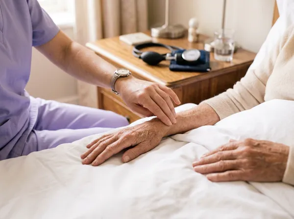

Cuidados Post Quirúrgicos
Acompañamos la recuperación desde el alta hasta que el paciente vuelve a valerse por sí mismo, con cuidadores y enfermería coordinados con el médico tratante.
Cuidados Post Quirúrgicos

Los días que siguen a una cirugía son los que más cuidado piden: el paciente vuelve a casa con dolor, con movilidad reducida y con indicaciones médicas que hay que cumplir al pie de la letra. El servicio de Cuidados Post Quirúrgicos de Longevity Argentina pone a su lado a profesionales que saben cómo acompañar esa etapa.
Según lo que indique el médico tratante, combinamos cuidadores/as para la asistencia diaria con auxiliares de enfermería y enfermeros profesionales para las curaciones, la medicación y los controles. Así la familia contrata exactamente lo que la recuperación necesita, y lo va reduciendo a medida que el paciente gana autonomía.
Lo ideal es coordinarlo antes del alta: nuestra directora asistencial evalúa la situación y el cuidado empieza el mismo día en que el paciente llega a su casa.
El cuidado que cada recuperación necesita
Se ajusta a la cirugía, a las indicaciones médicas y a cómo evoluciona el paciente
Cuidador/a
Para los días en que el paciente necesita ayuda con todo lo cotidiano mientras recupera fuerzas y movilidad.
- Higiene, alimentación y confort
- Movilización segura y prevención de caídas
- Recordatorio de la medicación indicada
- Control de signos vitales y aviso ante cualquier señal de alarma
Auxiliar de Enfermería
Suma las prestaciones técnicas que suelen indicarse después de una cirugía de complejidad moderada.
- Todo lo del Cuidador/a
- Curaciones básicas de la herida quirúrgica
- Inyecciones intramusculares
- Supervisión clínica del estado general
Enfermero Profesional
Para recuperaciones que requieren procedimientos complejos o que, sin este nivel de atención, se harían internado.
- Todo lo del Auxiliar de Enfermería
- Curaciones avanzadas de heridas complejas
- Vía endovenosa, sonda nasogástrica y botón gástrico
- Coordinación de insumos, aparatología y kinesiología
¿Para quién es este servicio?
Para pacientes que vuelven a casa después de una cirugía y todavía no pueden arreglarse solos, y para las familias que quieren que esa recuperación sea segura sin tener que improvisar. Es especialmente valioso en adultos mayores, en quienes una caída o una complicación en los primeros días puede cambiar todo el pronóstico.
Nuestra directora asistencial realiza una evaluación personalizada in situ antes de iniciar cualquier prestación y trabaja junto al médico tratante para definir el nivel de cuidado y cómo se ajusta durante la recuperación.
Cuándo elegir este servicio
- Alta después de una cirugía traumatológica (cadera, rodilla, columna)
- Recuperación de una cirugía abdominal, cardíaca u oncológica
- Curaciones o medicación indicadas por el médico tratante
- Paciente que vive solo o familia que no puede cubrir todos los turnos
- Alta temprana que reemplaza días de internación
Una recuperación acompañada, no improvisada
Seguimos sus indicaciones y le avisamos ante cualquier cambio: el cuidado en casa continúa lo que se hizo en el quirófano.
Si lo coordinamos antes del alta, el profesional ya está con el paciente cuando llega, que es cuando más se lo necesita.
Empezamos con el nivel de cuidado que hace falta y lo vamos reduciendo con la familia a medida que el paciente recupera su autonomía.
Preguntas frecuentes sobre este servicio
¿Cuándo conviene contratar cuidados post quirúrgicos a domicilio? +
Cuando el paciente vuelve a casa después de una cirugía y todavía necesita ayuda para moverse, higienizarse o tomar la medicación, o cuando el médico indica curaciones o controles que la familia no puede hacer sola. Lo ideal es coordinarlo antes del alta, para que el cuidado empiece el mismo día que el paciente llega a su casa.
¿Quién hace las curaciones de la herida quirúrgica? +
Depende de lo que indique el médico tratante. Las curaciones básicas e inyecciones intramusculares las realiza un Auxiliar de Enfermería; las curaciones avanzadas y los procedimientos complejos, como la vía endovenosa, un Enfermero Profesional.
¿Por cuánto tiempo se contrata el servicio? +
El tiempo que dure la recuperación. Se puede empezar con más horas o con enfermería y reducir la asistencia a medida que el paciente recupera su autonomía. Lo revisamos con la familia y con el médico tratante en cada etapa.
Dejanos tu consulta
Te contactamos a la brevedad para coordinar la evaluación in situ